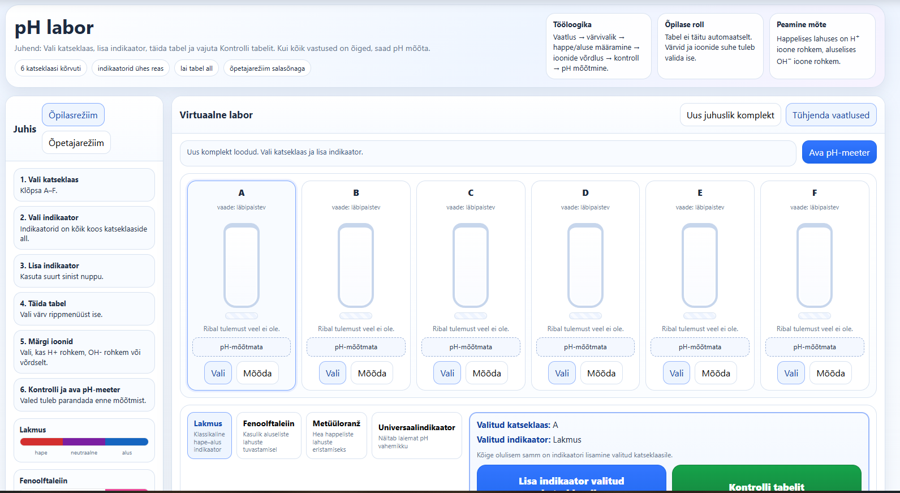
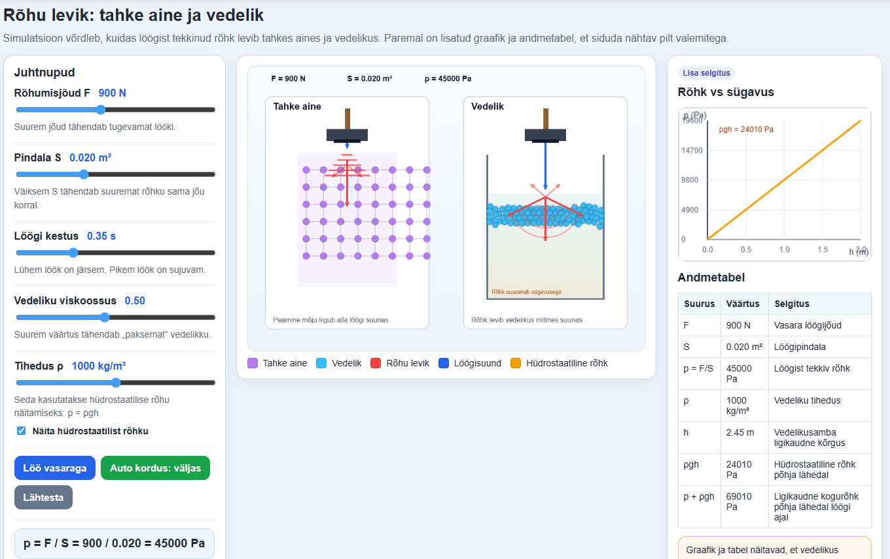
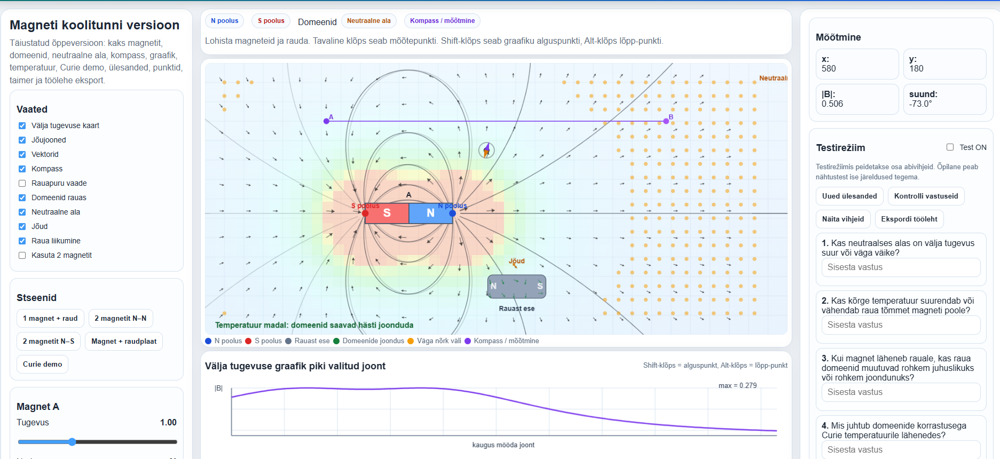
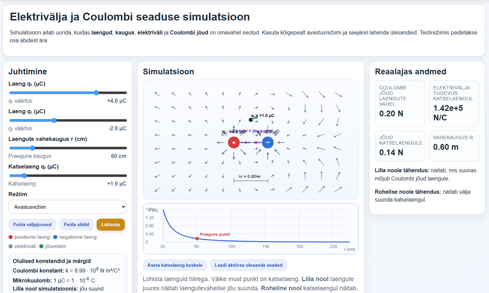
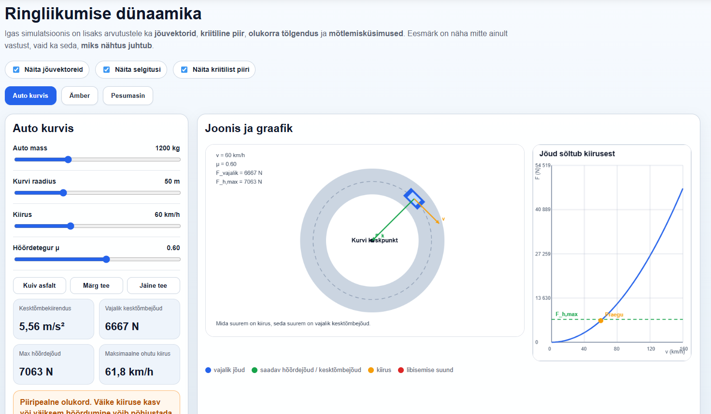
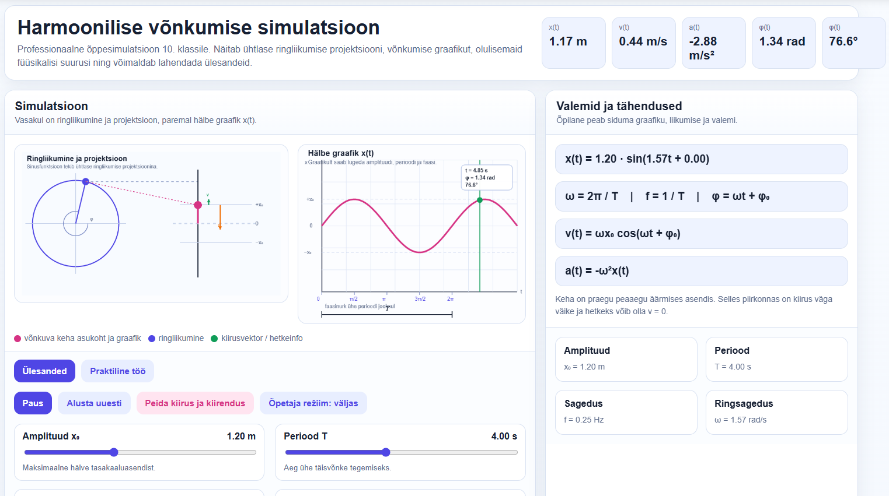
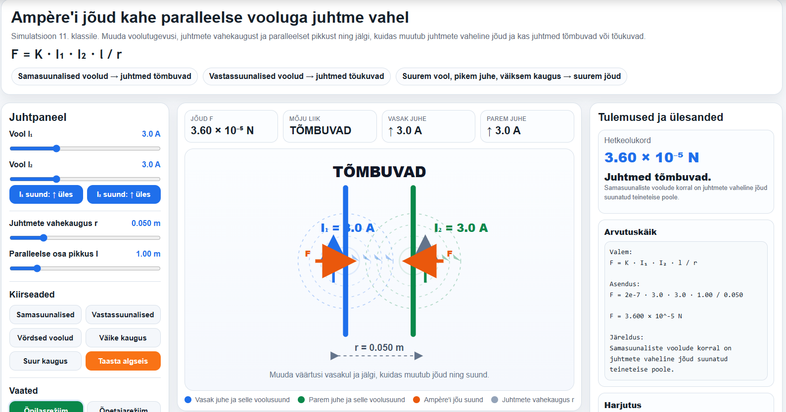
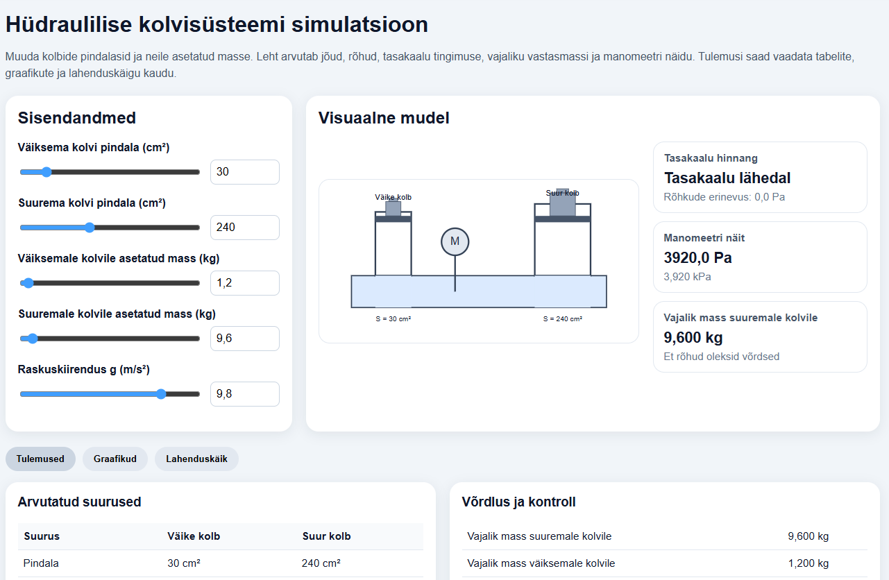
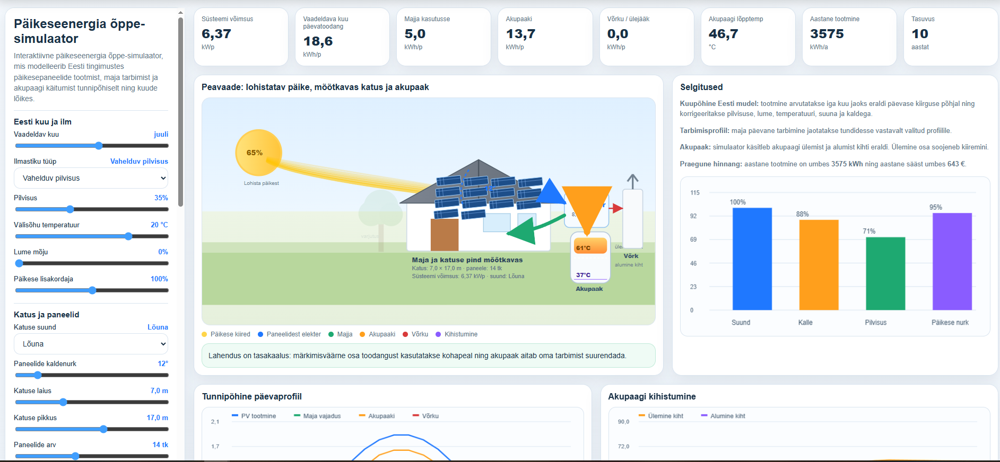

Õpetaja kiirstart
Kuidas õpetaja saab seda kasutada 15 minutiga?
LoodusLab AI on mõeldud nii, et õpetaja ei pea alustama nullist. Simulatsiooni saab kiiresti avada, õpilastele ülesande anda ja tunni lõpus arutelu teha.
TI-Hüppe konkursitöö
Eestikeelne simulatsioonide kogumik füüsika ja keemia õppimiseks. Materjal toetab uurimuslikku õpet, graafikute mõistmist, arvutusülesandeid ja õpetaja töö lihtsustamist.
Loodud Eesti õpetaja poolt päris koolitöö vajadustest lähtudes.
Uuri nähtusi, muuda suurusi, loe graafikuid ja kontrolli oma arusaamist.
Kasuta simulatsioone teema avamiseks, harjutamiseks, kordamiseks või iseseisvaks tööks.
Iga simulatsiooni juurde saab lisada AI-promptid selgituste, ülesannete ja tagasiside loomiseks.
Miks see on kasulik?
LoodusLab AI aitab muuta loodusteaduste õppimise arusaadavamaks, aktiivsemaks ja õpetajale ajasäästlikumaks.
Valmis simulatsioonid, juhendid ja tunnis kasutamise ideed aitavad vähendada ettevalmistusaega.
Õpilane muudab suurusi, vaatleb tulemusi ja teeb ise järeldusi, mitte ei õpi ainult definitsioone.
Simulatsioonid aitavad mõista seoseid valemi, mõõtmise, graafiku ja päris nähtuse vahel.
Õpetaja saab kasutada valmis promptide ideid selgituste, ülesannete ja diferentseerimise jaoks.
Sobib projektorisse, arvutiklassi, tahvlisse, telefoni ja iseseisvaks koduseks tööks.
Simulatsioonid toetavad põhikooli ja gümnaasiumi füüsika ning keemia olulisi teemasid.
Kiire ülevaade
Valmis kasutatav simulatsioonide kogumik, mida saab kohe tunnis rakendada.
Õpetaja kiirstart
LoodusLab AI on mõeldud nii, et õpetaja ei pea alustama nullist. Simulatsiooni saab kiiresti avada, õpilastele ülesande anda ja tunni lõpus arutelu teha.
Otsi avalehelt sobiv simulatsioon klassi, aine või märksõna järgi.
2 minNäita simulatsiooni projektoriga või jaga link õpilastele.
2 minÕpilased muudavad suurusi, vaatlevad tulemust ja panevad kirja järelduse.
7 minÕpetaja kasutab juhendi küsimusi või AI-prompti lisaküsimuste loomiseks.
4 minÕpilase õppimine
Simulatsioonid aitavad õpilasel loodusteaduslikke nähtusi uurida, seoseid märgata ja oma järeldusi põhjendada.
Õpilane näeb, kuidas füüsika ja keemia nähtused muutuvad, kui muuta tingimusi.
Õpilane seostab mõõdetud või arvutatud tulemused graafikuga.
Õpilane rakendab valemeid mitte ainult arvutamiseks, vaid ka seoste mõistmiseks.
Õpilane muudab üht suurust korraga, vaatleb tulemust ja teeb järelduse.
Õpilane õpib vastama küsimusele: mida tulemus näitab ja miks see nii on?
Õpilane kasutab AI-d selgituste ja lahenduskäigu mõistmiseks, mitte lihtsalt vastuse kopeerimiseks.
Simulatsioonide kogu
Otsi teema, klassi, aine või märksõna järgi. Esimeses versioonis on kogumikus 9 interaktiivset simulatsiooni.

Õpilane uurib pH-skaalat, määrab ainete happelisust või aluselisust ning seostab pH väärtuse igapäevaste ainetega.

Õpilane muudab vedeliku sügavust ja tihedust ning näeb, kuidas need mõjutavad rõhku ja selle graafikut.

Õpilane uurib magneti pooluseid, tõmbumist, tõukumist ja magnetvälja kujunemist lihtsa visuaalse mudeli abil.

Õpilane uurib laetud kehade vastastikmõju, elektrivälja suunda ja välja tugevuse muutumist.

Õpilane uurib, kuidas kiirus, raadius ja mass mõjutavad ringliikumisel vajalikku kesktõmbejõudu.

Õpilane muudab amplituudi, perioodi ja sagedust ning seostab võnkumise liikumise graafikuga.

Õpilane uurib kahe vooluga juhtme vastastikmõju ning näeb, kuidas jõud sõltub voolust, kaugusest ja juhtme pikkusest.

Õpilane uurib gaasi rõhu, ruumala ja temperatuuri seoseid kolvisüsteemi mudeli abil.

Õpilane uurib, kuidas paneeli nurk, valguse intensiivsus ja kasutegur mõjutavad elektrienergia tootmist.
Õpetaja töö lihtsustamine
Õpetaja juhendis on kasutussoovitused, õpitulemused, näidisküsimused, AI-promptid ja ideed diferentseerimiseks.
Valmis kasutamiseks
Kogumik on mõeldud kiireks kasutamiseks tunnis, iseseisvaks õppimiseks ja E-Koolikotti jagamiseks.